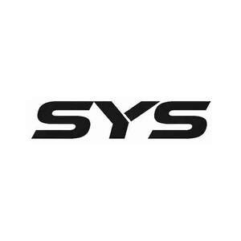

Trade Mark Journal No.2026/010 6 March 2026
UK00004340282 13 February 2026 (7)

- Class 7
- Motors and engines (except for land vehicles); Machine coupling and transmission components (except for land vehicles); Agricultural implements other than hand-operated; Incubators for eggs; Vacuum cleaners; Cleaning appliances utilizing steam; Washing apparatus; Wine presses; Electromechanical beverage preparation machines; Electric food grinders; Self-propelled road sweeping machines; Vehicle washing installations; Sewage pulverizers; Robot cleaners for household purposes; Mechanized livestock feeders; Hair cutting machines for animals; Aerating pumps for aquaria; Saw benches [parts of machines]; Paper machines; Spinning machines; Food preparation machines, electromechanical; Machines for making aerated beverages [electric]; Mineral water making machines; Brewing machines; Presses [machines]; Sewing machines; Laundry washing machines for household use; Machines for washing clothing [electric]; Kitchen machines, electric; Whisks, electric, for household purposes; Fruit presses, electric, for household purposes; Mills for household purposes, other than hand-operated; Control mechanisms for machines, engines or motors; Belts for motors and engines; Pumps [machines]; Air condensers; Compressed air pumps; Pneumatic transporters; Compressors [machines]; Ball-bearings; Hydraulic controls for machines, motors and engines; Pneumatic controls for machines, motors and engines; Pressure control valves being parts of machines; Vacuum pumps [machines]; Bearings, as parts of machines; Printing machines; Automatic stamping machines; Steam mops; Electric egg beaters; Pumps; Electric mixers for household purposes; Mixers [machines]; Electric meat grinders; Meat choppers [machines]; Meat cutters [electric machines]; Electric food choppers; Blades [machine parts]; Valves; Machine tools; Motors, other than for land vehicles; Agricultural implements other than hand operated hand tools; Agricultural machines; Suction machines for industrial purposes; Woodworking machines; Handling machines, automatic [manipulators]; Packing installations; Electric hand drills; Vending machines; Screwdrivers, electric; Clippers [machines]; Bulldozers; Grinders [machines]; Centrifugal machines; Lifts, other than ski-lifts; Knitting machines; Ironing machines; Washing machines [laundry]; Knives, electric; Sorting machines for industry; Saws [machines]; Robotic cleaning machines; Drilling machines; Elevators [lifts]; 3D printing pens; Steam cleaning machines; Carpet cleaning machines; Water pumps; Electric vacuum cleaners and their components; Dust filters and bags for vacuum cleaners; Robotic vacuum cleaners; Vacuum packaging machines; Electric vacuum food sealers for household purposes; Garbage compactors; Garbage disposal machines; Garbage disposers; Garbage disposals; Garbage [waste] disposals; Disposals (Garbage [waste] -); Electric garbage disposal machines; Garbage disposal units; Food waste disposals [garbage disposals]; Garbage compacting machines; Machines for compressing garbage; Compressed air sprayers; Insecticide sprayers [machines]; Power-operated sprayers; Sprayers [machines] for use in agriculture; Sprayers [machines] for use in horticulture.
LECEN Inc.
Representative: SMART IP LTD